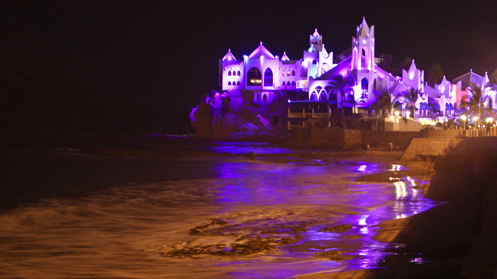

Fun Activities to do during the Night!
Mazatlan Sinaloa offers many fun activities you can do with your family or as a couple below there is a list of activities which you can choose from.

Night Activities!
- Classico Mazatlan
- Gus & Gus Restaurant Bar & Grill
- Yate Fiesta Mazatlan
- Creveceria Tres Islas
- Mazatlan Comedy Club
- Vagabundo Viajes
- La Consentida Mazatlan
- The Time Machine Cinema Pub
- Prive Mazatlan
- Joey's Oyster Bar
- El mal del Puerco Tragos y Garnachas
- Life En Español
- Pepe Club Mazatlan
- Club Campestre Mazatlan
The beautiful city of Mazatlan Sinaloa is waiting for you and your family choose which activites you want to do and plan your vacation today!
Today is the day to stop your worrying and begin your adventure in one of the most beautiful and fun cities Mazatlan Sinaloa.